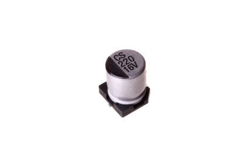

SMD (6.3 mm) 220 uF Capacitor (Electrolytic) 16v - CESU220

Summary
Name:
SMD (6.3 mm) 220 uF Capacitor (Electrolytic) 16v
ID:
CAPE-S63D-X-UF220-VF
Hex ID:
CESU220
WebPage:
https://github.com/oomlout/oomlout-OOMP/wiki/CAPE-S63D-X-UF220-VF
Short URL:
http://oom.lt/CESU220
Revision History:
https://github.com/oomlout/oomlout-OOMP/blob/master/parts/CAPE-S63D-X-UF220-VF/
Type
Size
Color
Description
Index
CAPE
Capacitor (Electrolytic)
S63D
SMD (6.3 mm)
X
UF220
220 uF
VF
16v
Images
About
This part is awaiting a description.
Specifications
Info
Value
Type
Capacitor (Electrolytic)
Size
SMD (6.3 mm)
Description
220 uF
Index
16v
Extra Details
Spotted a mistake, want to add more? Let us know
oomp@oomlout.com
All images and resources are licensed [CC BY-SA] unless otherwise stated (ie. the datasheets)